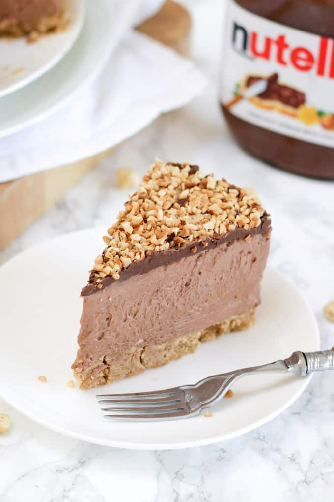

<
Nutella Chessacake easy recipe (No bake)
Ingredients
Crust
- 24 oreo cookies
- ⅓ cup butter, melted
24 oreo cookies
Cheescake Filling:
- 13 oz chocolate hazelnut spread, 1 jar
- 2 8 oz cream cheese
- 8 oz whipped topping, or whipped cream
Decoration
- whipped cream
- ⅔ cup chocolate shaving
Directions
- Crush cookies and mix with melted butter. o F.
- Spread mixture over pie pan.
- Refrigerate crust while making filling.
- Mix Nutella, cream cheese, and whipped topping until smooth.
- Spread mixture over pie crust.
- Decorate the pie then refrigerate for at least 4 hours or overnight. The pie can also be served frozen.
- Enjoy!
View the original recipe online
Contact Me
Send me an email!
University of Montana
32 Campus Drive
Missoula, MT 59812